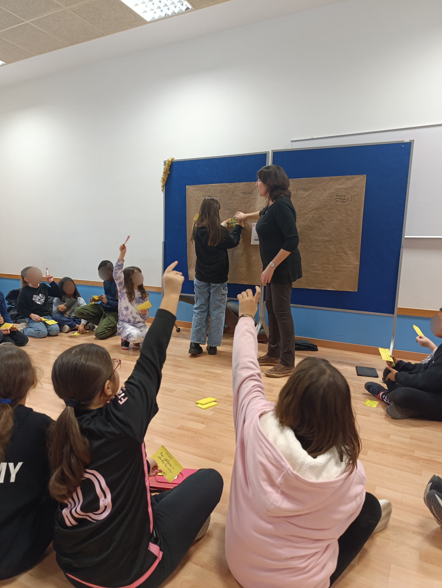
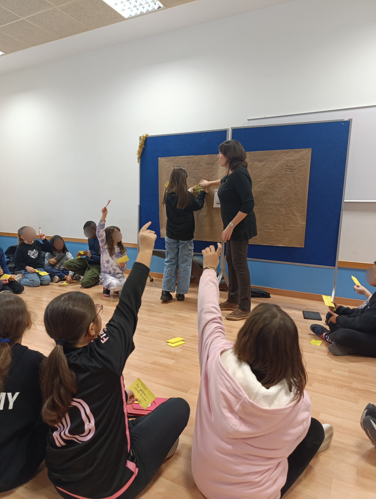

AffectiveLab 🤖
I am currently working in the AffectiveLab research group at the University of Zaragoza, collaborating on projects with social agents. My focus has been on the Sanbot Elf social robot, developing intergenerational experiences and researching human–robot interaction. Below are three key experiences I have participated in.
Intergenerational Experience
An interactive family puzzle game guided by the robot, carried out at Ibercaja during Robotics Week. The activity studied interaction patterns between participants of different ages through observation.
School Workshop with Children
Two interactive games with children: one where the robot reacted and displayed emotions, and another where children told stories and the robot guessed if they were true or false. Afterwards, a collaborative workshop was held to gather children's ideas about possible uses for robots in their school or community.
 

Residency Project: Timeline Application
An application designed for elderly people to store and revisit their memories. Memories could include a name, date, description, and a related song. The app could be used in companionship, or independently with guidance.